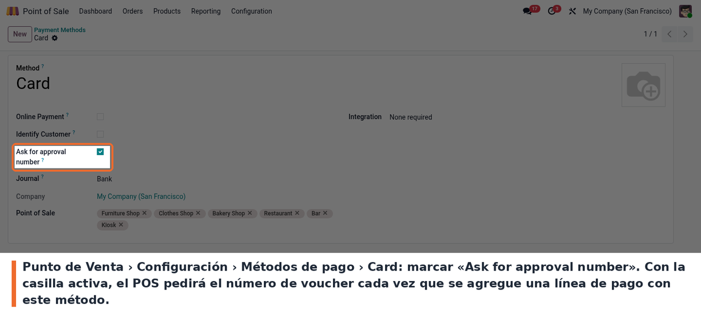
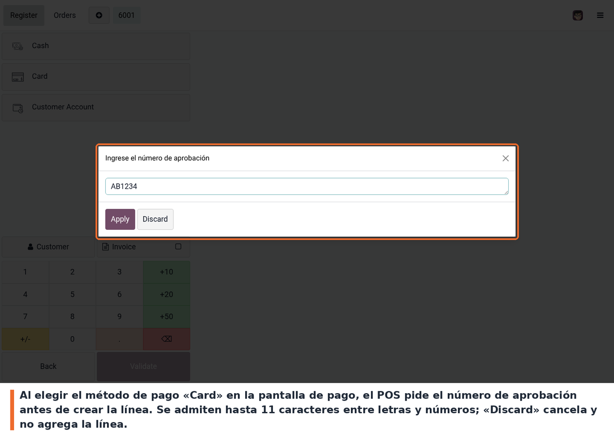
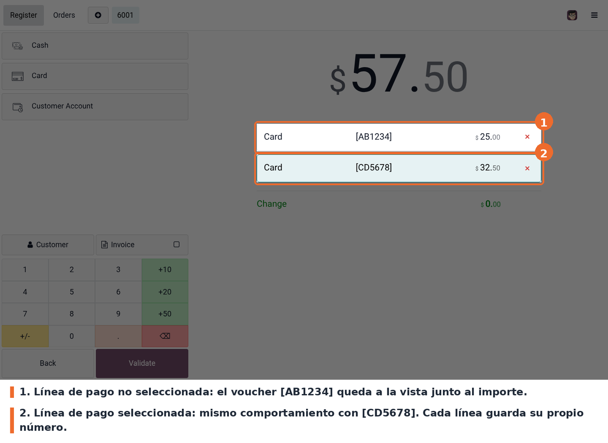
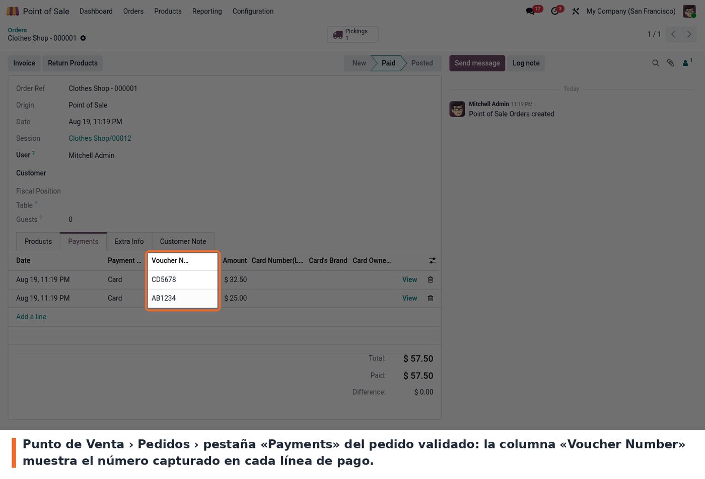

Pide el número de aprobación (voucher) al cobrar con tarjeta y lo guarda en la línea de pago del punto de venta. Cuando un método de pago del POS tiene activada la casilla «Ask for approval number», el POS abre un diálogo y pide el número de voucher antes de crear la línea de pago: valida que sean como máximo 11 caracteres alfanuméricos, y si el cajero descarta el diálogo o el dato no cumple, la línea de pago no se agrega.
El número queda visible en la línea de pago junto al importe durante todo el cobro, se guarda en el pedido y después se consulta desde el backend. Los métodos de pago que no tienen la casilla marcada siguen funcionando como siempre: el módulo no interfiere con ellos.
Ir a Punto de Venta > Configuración > Métodos de pago, abrir el método con el que se cobra con tarjeta y marcar «Ask for approval number». La casilla está debajo de «Identify Customer», en el formulario del método.
Odoo no permite guardar la configuración de un método de pago mientras haya una sesión de POS abierta: para cambiar esta casilla hay que cerrar la caja primero.
Después de guardar, recargar la pantalla del POS no alcanza: hay que volver a entrar desde el backend (botón Continue Selling / Open Register) para que la caja tome la nueva configuración.
La casilla está en el formulario del método de pago:

Casilla Ask for approval number en el método de pago del POS
En la pantalla de pago, al elegir el método configurado, el POS pide el número de aprobación. Se escribe el voucher del datáfono y se confirma con «Apply»:

Diálogo del POS pidiendo el número de aprobación
El número aparece entre corchetes junto al importe, tanto en la línea seleccionada como en las demás. Un pedido puede tener varias líneas del mismo método, cada una con su propio voucher:

Líneas de pago del POS mostrando el número de voucher junto al importe
Una vez validado el pedido, el número se consulta en Punto de Venta > Pedidos, pestaña «Payments», columna «Voucher Number». El mismo campo está en el formulario del pago del POS (Punto de Venta > Pedidos > Pagos):

Pedido del POS en el backend con la columna Voucher Number
vaucher_num (errata heredada) a voucher_num en la
versión 19.0.1.1.0 mediante migración RENAME atómico. La migración
19.0.1.1.0 mantiene una compatibilidad temporal que acepta payloads legacy
vaucher_num y los mapea a voucher_num con un log WARNING; se retirará
en 19.0.1.2.0 junto con el DROP de las columnas huérfanas, cuando ningún
POS con assets antiguos siga en uso. El script de 19.0.1.2.0 solo borra una
columna vieja si no le queda ningún dato sin copiar.use_fast_payment): no pasa por la pantalla de
pago, así que el voucher se pide al validar
(OrderPaymentValidation.askBeforeValidation). Si se cancela o el número no
es válido, el pedido no se valida y la línea creada por el pago rápido se
quita. Desde la pantalla de pago las líneas ya traen el voucher y no se
pregunta dos veces.voucher_num_account, pos_payment_id y super_voucher de
account.move.line y pos_vouchers_nums de account.move guardan el
histórico, pero ningún código los llena (0 en los últimos 300 000 apuntes de
la copia de producción).views/account_move_line_list.xml)
está fuera del manifiesto, como en la 17.static/description/icon.png. El módulo se publica sin icono propio.auto_install: se instala a mano.